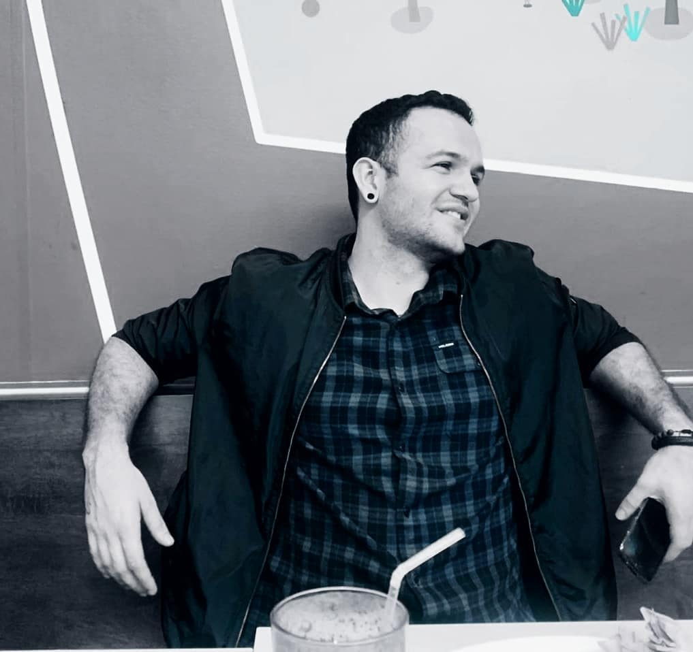
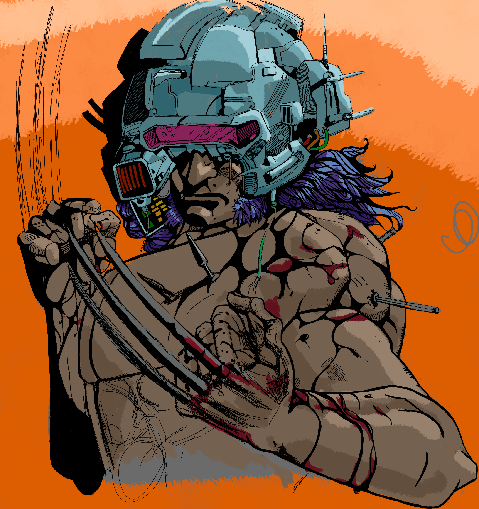

About Me
I'm seeking differents ways to learn
Proactive person with an affinity to look for new challenges. Oriented to the area of technology and energy. I currently have a Bachelor's degree in Electrical Engineering from the University of Costa Rica, in which the graduation project was "Design of an algorithm for the detection of faults in electrical networks with smart meters". I am also finishing my Bachelor's thesis with the project "Review of faults in solar panels and design of an algorithm based on neural networks". I worked at "Eaton Electrical SRL" current market leader in low voltage distribution equipment, as "Project Quotation Engineer" in which my tasks are the review of electrical plans for projects in the commercial and industrial sector of Costa Rica, and the realization of technical and economic offer for each project. Now I also want to
My hobbies are exercise, drawing, programming and languages. I speak English and Italian, and I am starting to learn Portuguese
My hobbies are exercise, drawing, learning and languages. I speak English and Italian, and I am starting to learn Portuguese.
© Jose Rojas Resume. All Rights Reserved. Designed in HTML5